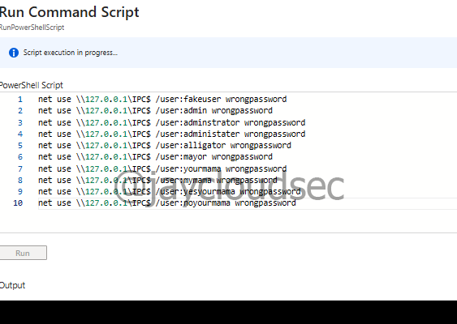
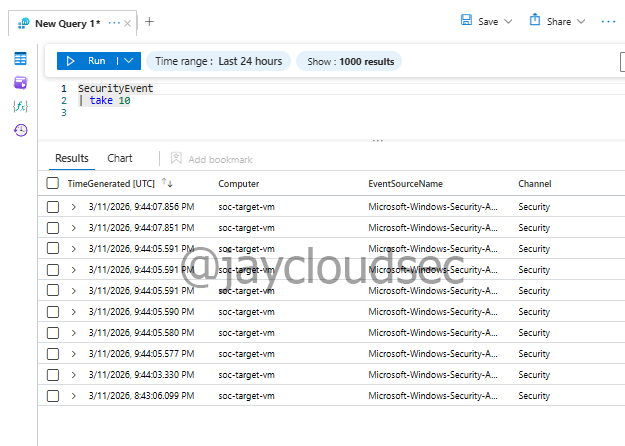
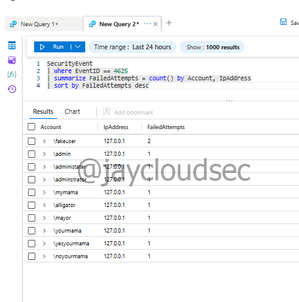
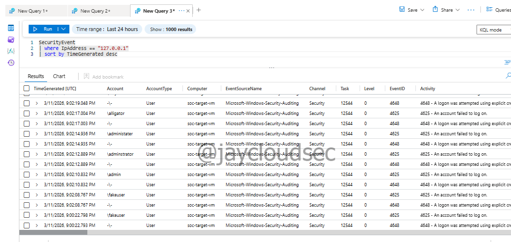
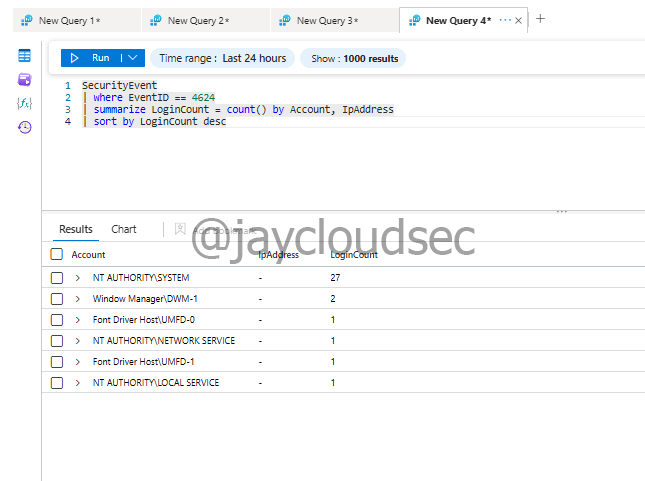
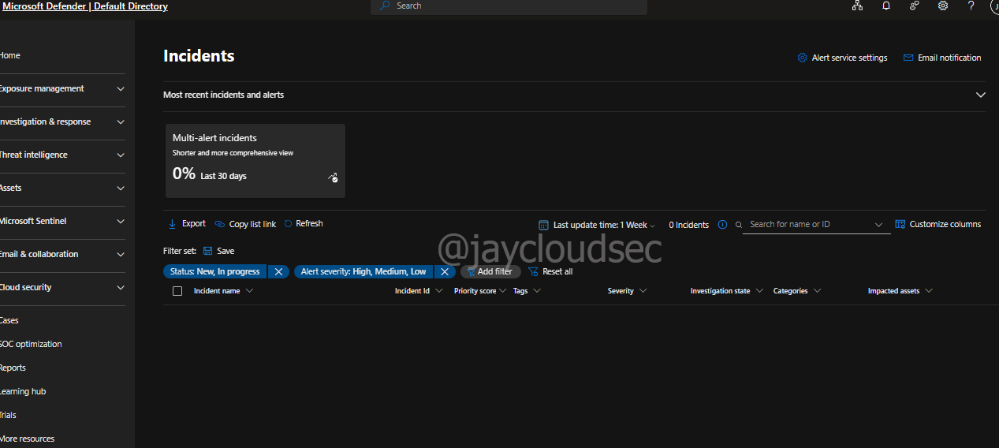
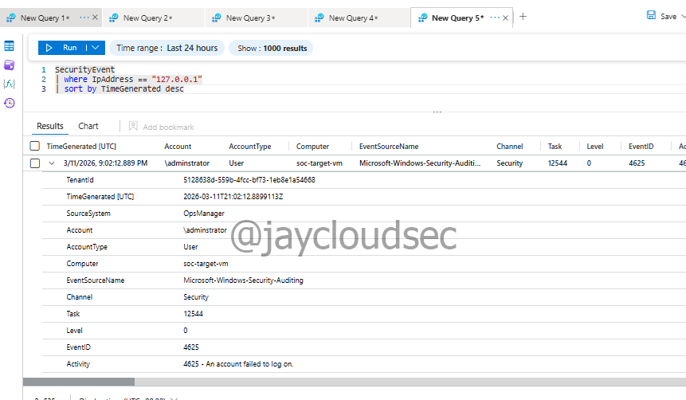

Lab 01 — SOC Incident Investigation
Overview
This write-up documents a SOC analyst investigation into authentication activity using Microsoft Sentinel. Windows Security Event logs collected from a monitored virtual machine were analyzed to identify failed login attempts and investigate potential brute-force authentication activity. The investigation demonstrates how analysts use SIEM tools to analyze logs, identify suspicious behavior, and document findings during a security investigation — without relying on automated alerting.
Environment
The following architecture was used for this investigation:
Simulated Attack Activity
↓
Windows Security Logs (Virtual Machine)
↓
Log Analytics Workspace
↓
Microsoft Sentinel
↓
SOC Analyst InvestigationTechnologies used:
- Microsoft Azure
- Microsoft Sentinel
- Log Analytics Workspace
- Windows Security Event Logs
- Kusto Query Language (KQL)
Objectives
- Verify log ingestion into Microsoft Sentinel
- Identify failed authentication attempts
- Investigate suspicious IP activity
- Analyze successful login events
- Review the Sentinel incident dashboard
- Perform entity investigation from log data
Simulated Attack Activity
Failed login attempts were intentionally generated using the Run Command feature within the Azure Virtual Machine. This approach was used instead of RDP or SSH because the VM is normally kept powered off to reduce cloud costs. Using Run Command allowed authentication failures to be simulated while minimizing VM runtime.
The following PowerShell commands attempted logins with multiple fake usernames and incorrect passwords, generating Windows Event ID 4625 logs:
net use \\127.0.0.1\IPC$ /user:fakeuser1 wrongpassword
net use \\127.0.0.1\IPC$ /user:fakeuser2 wrongpassword
net use \\127.0.0.1\IPC$ /user:administrator wrongpassword
Run Command used to simulate failed login attempts inside the Azure VM
Log Verification
To confirm that logs were being ingested into Sentinel, the following query was executed:
SecurityEvent
| take 10This returned Windows security events from the monitored VM, confirming successful log ingestion.

KQL query confirming successful log ingestion into Microsoft Sentinel
Failed Login Investigation
Failed authentication attempts were identified using Windows Event ID 4625. This event is generated every time an account fails to log on, making it a primary indicator for brute force detection.
SecurityEvent
| where EventID == 4625
| summarize FailedAttempts = count() by Account, IpAddress
| sort by FailedAttempts descThis query surfaces which accounts experienced failed logins and the number of attempts per IP address, allowing the analyst to identify high-volume sources quickly.

Failed login attempts summarized by account and IP address
Suspicious IP Investigation
The source IP address associated with the failed logins was investigated further to analyze the timeline of activity.
SecurityEvent
| where IpAddress == "127.0.0.1"
| sort by TimeGenerated descLab context note: The IP address appears as 127.0.0.1 because the attack activity was simulated locally within the VM using Run Command. In a production environment, this IP would be an external address — the investigation workflow remains identical. The analyst would pivot on the IP, build a timeline, and correlate against threat intelligence feeds. The 127.0.0.1 result here confirms the simulation ran as expected inside the VM boundary.

Timeline of activity for the source IP address
Successful Login Analysis
After identifying failed attempts, the next analyst step is to determine whether any attempt eventually succeeded. Windows Event ID 4624 represents a successful logon.
SecurityEvent
| where EventID == 4624
| summarize LoginCount = count() by Account, IpAddress
| sort by LoginCount descThis query allows the analyst to cross-reference failed logins against successful ones — the critical question being whether a brute force attempt resulted in unauthorized access.

Successful login events summarized by account and IP address
Sentinel Dashboard Review
The Sentinel Incidents dashboard was reviewed to observe how alerts and security incidents appear in a live environment. At the time of this investigation, no incidents were present.
Why no incidents were generated: This is expected behavior. At this stage of the lab series, no analytics detection rules had been configured yet. Sentinel only generates incidents when a detection rule fires. The absence of incidents here is not a gap — it sets the baseline that Lab 02 (Detection Engineering) addresses by building the KQL rule that would have caught this activity automatically.

Sentinel Incidents dashboard — no incidents present at this stage, as expected
Entity Investigation
Security events were expanded to review entity details. In a real SOC environment, entity investigation is how analysts pivot between related events to build a complete picture of an incident.
Entities reviewed:
- Account — which user accounts were targeted
- Computer — which host generated the events
- IP Address — source of the authentication attempts
- Event ID — classification of the security event
- Timestamp — timeline reconstruction

Entity details expanded for timeline reconstruction and pivot analysis
MITRE ATT&CK Mapping
| Technique | ID | Investigation Activity |
|---|---|---|
| Brute Force: Password Guessing | T1110.001 | Analyzed Event ID 4625 failed login attempts |
| Brute Force: Password Spraying | T1110.003 | Identified pattern of multiple accounts targeted |
| Valid Accounts | T1078 | Correlated successful and failed login events |
| Remote Services: RDP | T1021.001 | Investigated RDP authentication events |
Analyst Conclusion
This investigation successfully demonstrated the core manual triage workflow of an L1 SOC analyst — log verification, failed login identification, IP timeline analysis, successful login correlation, and entity pivoting — all without relying on automated alerting.
The absence of automated incidents is the key takeaway from this lab. A SOC analyst working without detection rules must rely entirely on manual KQL queries to surface suspicious activity. This is the gap that detection engineering closes.
In a production environment, the next steps following this investigation would be:
- Enrich the source IP against threat intelligence feeds (AbuseIPDB, VirusTotal)
- Check if the account targeted has elevated privileges
- Determine if any successful login followed the failed attempts
- Escalate to L2 if successful login is confirmed from same source IP
- Document findings in the ticketing system with timeline and evidence
- Recommend creation of a detection rule to automate alerting — covered in Lab 02